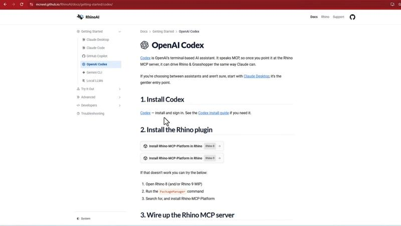
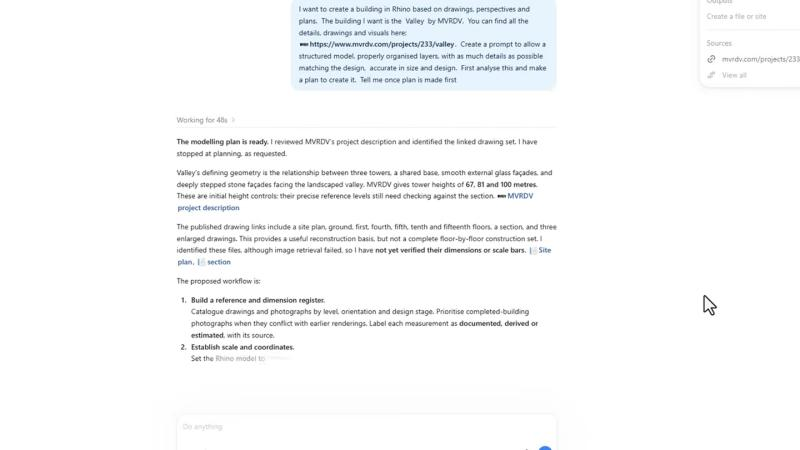
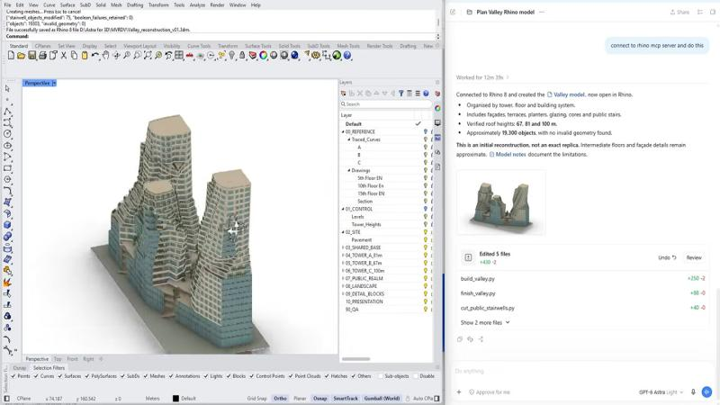
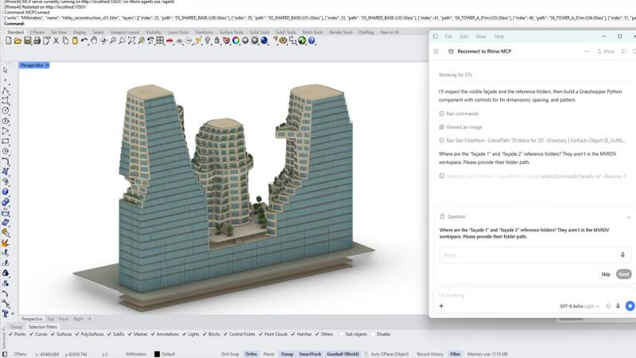
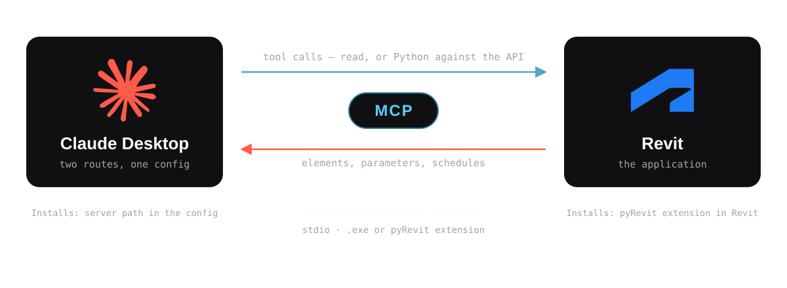
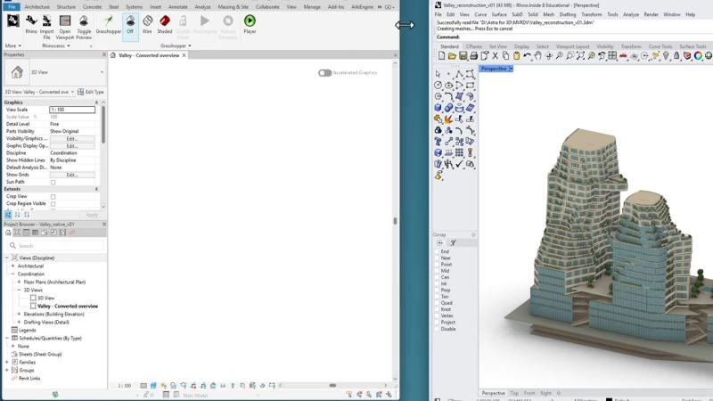

Most AI 3D demos use a sketch and a room list. That is a fair test of spatial reasoning and a poor test of architecture. So this one used a real building with a published drawing set — MVRDV's Valley in Amsterdam, a stack of terraced stone volumes around three towers at 67, 81 and 100 metres, with almost no repeating geometry — and asked GPT Astra to build it in Rhino, then carry it into Revit as native elements.
The whole exercise, including the Revit conversion and a documentation experiment, took under two hours.
What this workflow actually proves
Not that you will ever be handed a complete drawing set and told to model it. You won't. What it tests is whether the model can read architectural drawings, reason about what it is looking at, and drive the two applications most of us work in — rather than producing a pretty mesh.
That is the part worth knowing about, because it is the part that transfers to work you actually do.
What you need
- Rhino 8 with the
Rhino-MCP-Platformplugin, installed through the Rhino package manager. - Codex — the OpenAI terminal assistant, Windows app or terminal. It speaks MCP, so it can drive Rhino directly instead of writing scripts blind.
- Revit, plus Rhino.Inside.Revit from
rhino3d.comand the pyRevit MCP server, if you want the second half. - A standard-plus account is enough. This whole run used Astra on its light setting and finished with over half the five-hour window still available.
1. Connect Rhino first, and check it
Install the plugin, then type MCPStart in the Rhino command line. The server reports a localhost port — the number varies between sessions, so read it rather than assume it.


Ask Codex to list its MCP servers before you do anything else. If Rhino is not in that list, nothing that follows will work, and you will waste tokens discovering it the slow way.
Make a fresh project folder at this point. Everything the model generates — scripts, references, the Rhino file — lands there, and you will want it separated from your live project.
2. Make it plan before it models
This is the step that decides whether the result is a model or a mess. The prompt did not ask for a building. It asked for a plan to build one, covering layer structure, organisation, levels, materials and accuracy, all derived from the drawings — and it ended with an instruction not to start until the plan was agreed.
That last sentence is the one to keep.

What came back was a proper workflow: a dimension register, scale and coordinate setup, a layer schema, a three-stage checkpoint process — and, usefully, a statement of what the published drawings could not establish. A model that tells you the limits of its own evidence is worth more than one that does not.
Point it at the source material rather than downloading drawings yourself. It can fetch from a URL and search for additional references, and it will use them.
3. Read the layer tree, not the render
With the plan agreed, the instruction was simply to connect to the Rhino MCP and run it. 12 minutes 39 seconds. Roughly 19,300 objects. One prompt.

The viewport is not the test. The layer panel is. Under 00_REFERENCE it had imported every plan, section and elevation, scaled and positioned in the model, with level lines and annotations. Below that, a numbered structure — control, site, shared base, a layer group per tower, public realm, landscape, detail blocks, presentation, QA.
That is an organised model somebody else can pick up, not a viewer-friendly output. Modelling the reference set alone by hand is most of a day.
4. Edit what it built, parametrically
The more realistic use of this setup is not building from scratch but changing what exists. Feed it a reference image of a facade and ask for a Grasshopper Python component with sliders, rather than asking it to make every adjustment for you.

You end up controlling the dimensions and spacing yourself, during design, which is both faster and cheaper than another round of prompting. Tasks shaped like this — build me the tool, don't operate it — are where AI earns its place in a modelling workflow.
5. Rhino to Revit, as native elements
This is the part everyone dreads. Export geometry and you lose levels, categories and the ability to schedule or tag anything.
The route here was Rhino.Inside.Revit, which runs Rhino inside the Revit process, plus the pyRevit MCP server so Astra can act through Python. The prompt was short: use Rhino.Inside, bring every layer across from Rhino as native elements wherever possible.


It inspected the Rhino model first, and the layer names from step 2 are exactly what let it decide categories. After about three minutes of planning it produced a conversion list, then ran for roughly ten minutes, hit the session limit at around 35 minutes, and finished after the reset.
566 Rhino layers converted, with a conversion report naming what became a native family and what fell back to a DirectShape — mostly the genuinely unique elements. Windows arrived unhosted; a follow-up prompt cut the wall openings in under four minutes.
If you want this to behave better, standardise your windows and repeating components in Rhino first. The conversion is only as good as what it is converting.
6. For documentation, build tools instead
Driving documentation through MCP works and is very token-heavy. The more efficient answer is to ask for a Revit toolbar of scripts — create room areas, batch-rename views, index sheets, audit model health — and then run those yourself, repeatedly, for free.
That is the shape of this that holds up in practice.
Where it falls over
- Unique components become DirectShapes. Expect it, and standardise upstream.
- It is token-heavy through MCP. Use scripting for bulk work and MCP for the parts that need to see the model.
- Default views and sheets are messy. They can be cleaned up against your templates, but that is another pass.
- It cannot invent what the drawings do not show. Internal layouts and construction detail were explicitly outside what the published set could support, and it said so.
The honest takeaway
This is not a finished project model and nobody should present it as one. What it is: evidence that if you break the work down and make it plan first, a current model can read a real drawing set, build an organised Rhino model from it, and carry that into Revit with categories intact.
The skill being tested is not prompting. It is knowing what a good model structure looks like well enough to specify one.